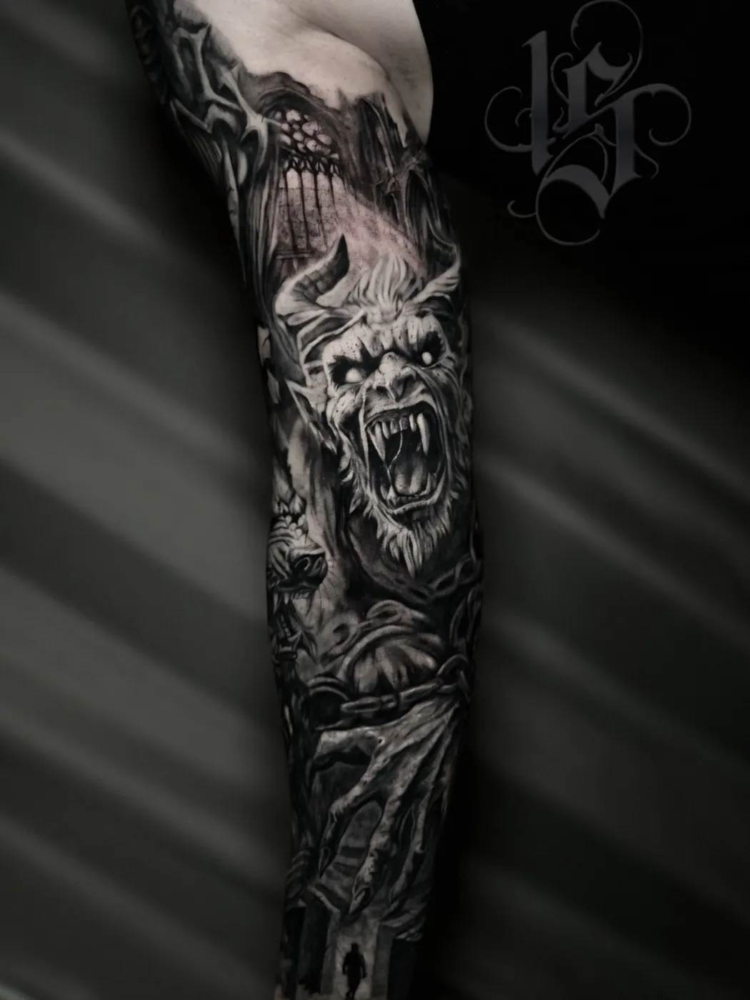
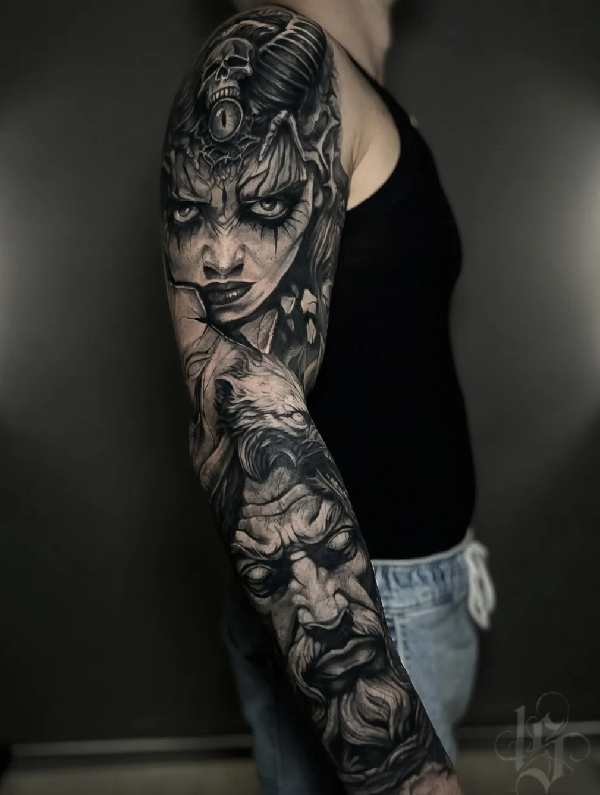
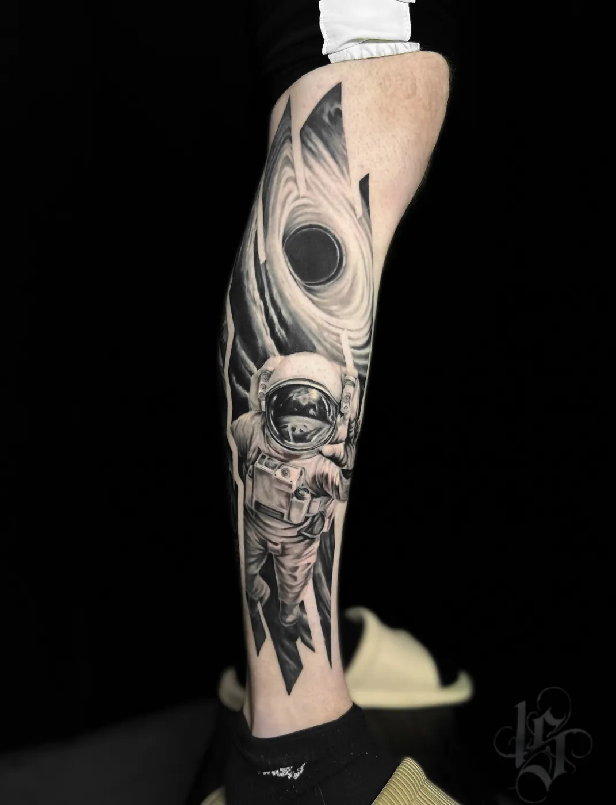
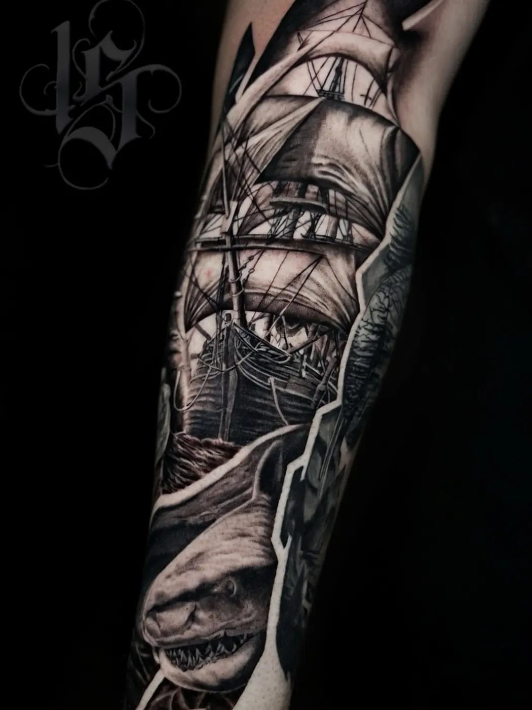
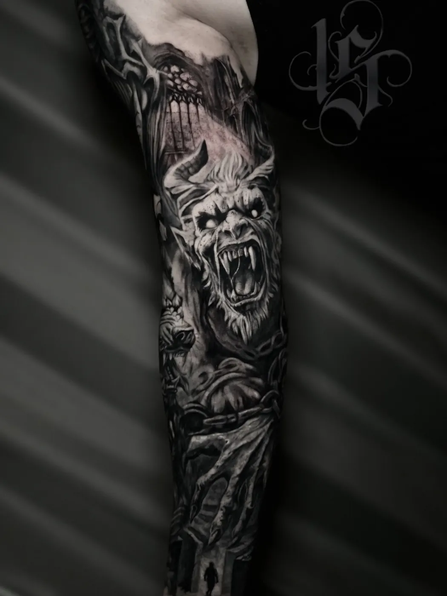
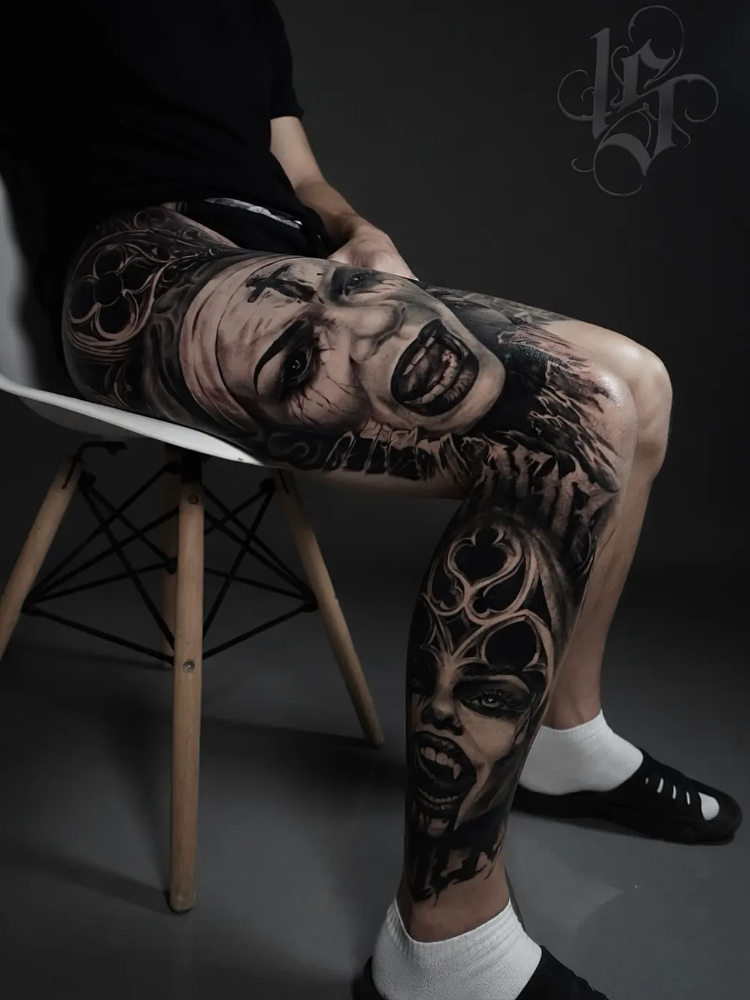

Тату-студия INKSIDE в Минске
Тату рукав в Минскев четыре руки ✦
Рукава, ноги и крупные проекты в ч/б и цветном реализме. Ногу целиком мы делали за 2 дня.
- сеанс от 930 BYN
- консультация 0 BYN
- Виталий и Надежда








Сеансыкак растёт рукав
От плеча до запястья, одна цельная композиция. Самый большой проект, его делают в несколько сеансов.
Плечо до локтя или предплечье. Позже половину можно продолжить до полного рукава: это обсуждаем сразу.
Большая ровная поверхность, где реализм особенно хорошо читается. Ногу целиком в четыре руки мы делали за 2 дня.
Между сеансами кожа должна зажить. Сроки и число сеансов мастер скажет под ваш проект.
Вопросыкоротко
Сколько сеансов нужно на рукав?
Зависит от детализации и размера. Мастер оценит объём после эскиза. Ногу целиком в четыре руки мы делали за 2 дня.
Сколько стоит рукав?
Сеанс на рукав или большую работу - от 930 BYN. Эскиз от 40 BYN, консультация бесплатная. Итоговую цену мастер называет после утверждения эскиза.
Можно перекрыть старую тату рукавом?
Да, перекрытия старых тату - наша специализация. Пришлите фото зоны при дневном свете, предложим варианты.
Ещё вопросы и подробности · 8
Можно начать с половины рукава?
Да. Главное сразу обсудить, будет ли рукав расти, чтобы первая часть потом органично продолжилась.
Как подготовиться к сеансу?
Выспаться, поесть перед сеансом, без алкоголя накануне. Одежда, которая открывает зону.
Как делается рукав
- Идея и консультация. Присылаете референсы или просто описываете, что хочется. Бесплатно обсуждаем сюжет, стиль, объём и цену.
- Эскиз под руку или ногу. Эскиз рисуется под ваше тело, с учётом формы руки или ноги. Стенсил на коже показывает, где пройдёт каждая линия.
- Сеансы. Крупный проект делим на сеансы. Одноразовые иглы вскрываем при вас.
- Заживление. План ухода по дням, через месяц присылаете фото, мастер проверяет результат.
Когда начинать
Осень и зима - лучшее время: меньше солнца, а к лету всё заживёт. Для рукава это особенно важно, ведь между сеансами кожа должна заживать.
Старая тату на руке не помеха: рукав можно построить так, чтобы перекрыть её. Подробнее - про перекрытие тату.
Как собрать сюжет рукава
Хороший рукав читается как одна картина, а не как набор отдельных тату. Поэтому мастер начинает с общей идеи: главный объект, второстепенные детали и фон, который их связывает.
- Одна тема. Космос, море, мифология, животные, портреты: когда всё про одно, рукав выглядит цельно. Пример - рукав с космонавтом и рукав с кораблём в галерее.
- Стиль. Ч/б реализм даёт глубину и контраст, цветной реализм - яркость. Смешивать можно, но это решение лучше принять на старте.
- Форма руки. Крупные объекты ставят на плечо и предплечье, где поверхность ровнее, а на локоть и запястье уходят переходы и фон.
Мужской или женский рукав - разница обычно в сюжете и плотности, а не в технике. Цена от этого не зависит: важны размер, стиль и детализация.
Сколько стоит тату рукав
Сеанс на рукав, ногу или другую большую работу - от 930 BYN. Сколько понадобится сеансов, зависит от детализации и размера: мастер скажет после эскиза.
| Минимум, до 1 часа | 180 BYN |
| Каждый следующий час | 150 BYN |
| Эскиз под вас | от 40 BYN |
| Консультация | 0 BYN |
| До 5 см | от 180 BYN |
| 5-10 см | от 330 BYN |
| 10-20 см | от 480 BYN |
| Рукав, нога или большая работа (сеанс) | от 930 BYN |
Итоговую цену мастер называет после утверждения эскиза: важны детализация, размер и место.
Сколько длится сеанс
В калькуляторе на главной сеанс на рукав или ногу - это около 6 часов работы. Длинный сеанс - нагрузка и для кожи, и для вас, поэтому важно выспаться, поесть перед сеансом и не пить алкоголь накануне. Паузы делаем, когда нужно. Про ощущения на разных частях руки и ноги - на странице больно ли делать тату: внешняя сторона плеча и предплечья обычно терпимо, внутренняя сторона руки и локтевой сгиб чувствительнее.
Уход между сеансами
Каждую часть рукава ведут до заживления, и только потом продолжают рядом: так кожа восстанавливается, а мастер видит, как легла предыдущая работа. Сроки между сеансами мастер подскажет под ваш проект.
- День 1-3. Плёнку держите столько, сколько сказал мастер. Мягко промывайте, тонкий слой мази.
- День 4-10. Шелушение и зуд - норма. Не чесать, без бани, бассейна и моря.
- День 11-30. Лёгкий крем дважды в день, прячем от прямого солнца.
- Через месяц. Присылаете фото зажившей тату. Если нужно, записываем на коррекцию.
Подробно, с плёнкой, баней, солнцем и спортом - в гиде по уходу за тату.
Ещё по теме
 Виталиймастер
Виталиймастер Надеждамастер
Надеждамастер Перекрытие татууслуга
Перекрытие татууслуга Цветной реализмуслуга
Цветной реализмуслуга Больно ли делать татугид
Больно ли делать татугид Уход за татугид
Уход за татугид Коррекция татууслуга
Коррекция татууслуга Реализмуслуга
Реализмуслуга Тату портретуслуга
Тату портретуслуга Мини татууслуга
Мини татууслугаЗадумали рукав?начнём с идеи
Напишите идею в двух словах: мастер честно скажет, подойдёт ли она вам и сколько будет стоить.
- телефон
- +375 (44) 511-19-12